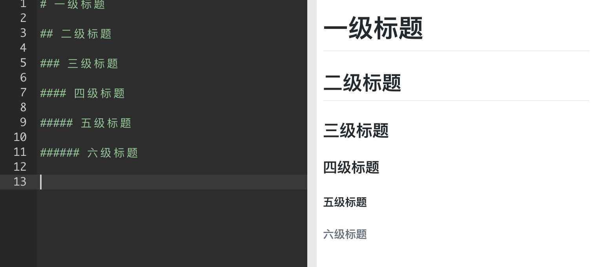
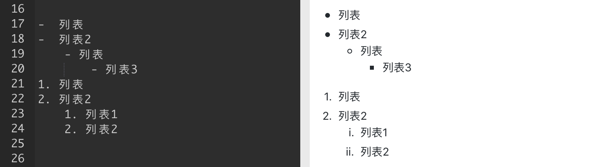
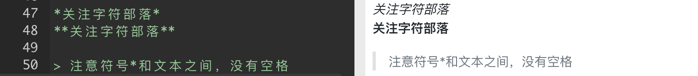
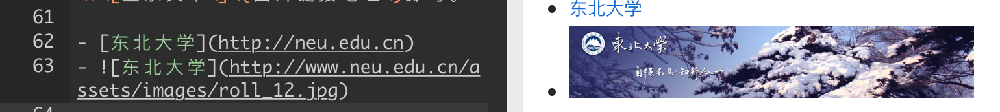
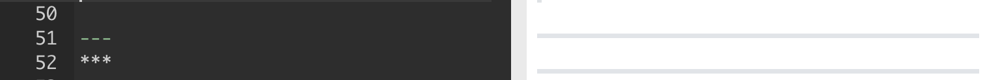
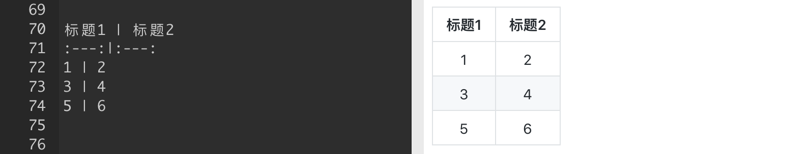
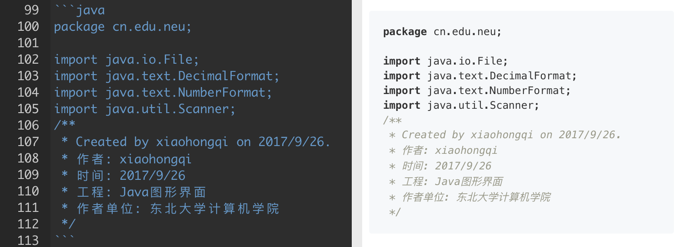
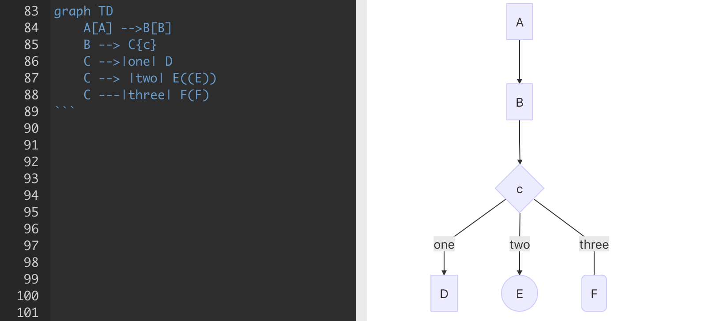
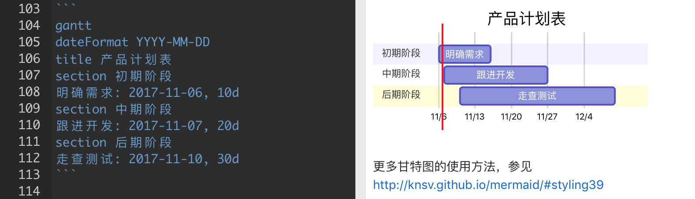

Markdown语法简介
0 条评论Markdown是一种轻量级的「标记语言」，通常为程序员群体所用，目前它已是全球最大的技术分享网站 GitHub 和技术问答网站 StackOverFlow 的默认书写格式。有了它你可以专注内容而不是纠结排版。其基本语法也比较简单，花上几分钟的时间就可以轻松掌握它。
讲解目录
- 标题
- 列表
- 引用
- 粗体和斜体
- 链接与图片
- 分割线
- 表格
- 代码高亮
- 甘特图
- 流程图
- 办事清单
- 数学公式
0x00 标题
在Markdown中，如果想将一段文字定义为标题，只需要在这段文字前面加上 #，再在 # 后加一个空格即可。还可增加二、三、四、五、六级标题，总共六级，只需要增加 # ，增加一个 # ，标题字号相应降低一级

0x01 列表
列表格式也很常用，它可以让你的文稿变得井井有条。在 Markdown 中，你只需要在文字前面加上 - 就可以了；如果你希望是有序列表，在文字前面加上 1. 2. 3. 即可==，-、1.和文字之间要保留一个字符的空格==。

0x02 引用
如果你需要在文稿中引用一段别处的句子，那么就要用到「引用」格式。
在引用文字前加上 > 并与文字保留一个字符的空格，即可。
0x03 粗体斜体
用两个 * 包含一段文本就是粗体的语法；
用一个 * 包含一段文本就是斜体的语法。

0x04 链接与图片
链接：在 Markdown 中，插入链接只需要使用 [显示文本](链接地址) 即可。
图片：在 Markdown 中，插入图片只需要使用 即可。

0x05 分割线
分割线的语法只需要另起一行，连续输入三个星号 * 、— 即可分割两段文字内容。

0x06 表格
在Markdown文稿中键入表格键入：

0x07 代码高亮
“```” 开始和结束，并在开始处说语言类型:

0x08 流程图
流程图语法见下图，详细文档参考:
http://knsv.github.io/mermaid/#flowcharts-basic-syntax

0x09 甘特图
甘特图语法见下图，详细文档参考:
http://knsv.github.io/mermaid/#styling39

0x0a 办事清单
待办事项和清单在日常工作、生活中经常被使用。
在Markdown中，你只需要在待办的事项文本或者清单文本前加上- [ ]、- [x]即可。
- [ ] 表示未完成，- [x] 表示已完成。
注：键入字符与字符之间都要保留一个字符的空格。

注：如果要支持流程图和甘特图等，markdown需要安装绘图插件-mermaid
当然如果你们想要拥有更多的功能，也可以安装更多好用的markdown插件。作者：John
地点：东北大学浑南校区
时间：2017年11月06日15:34:33
声明：资源部分借鉴于网络，如有侵犯版权，请于本文作者联系。